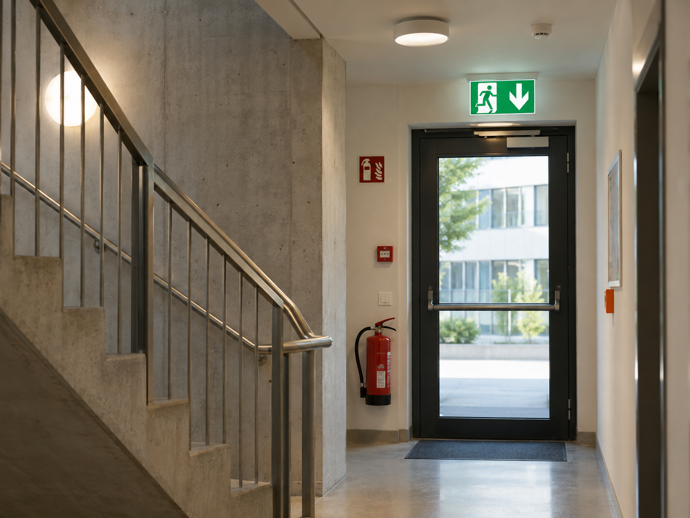

01
Protezione & conformità
Antincendio
Progettiamo e verifichiamo misure di protezione antincendio per edifici e impianti secondo la norma e le direttive antincendio VKF, dalla strategia alle prove sul campo e alla gestione della sicurezza nel tempo.
